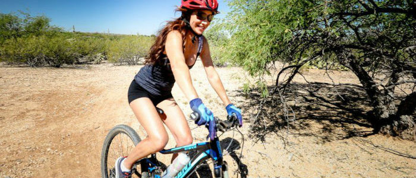

In Southwest Montana
Bozeman is a town in and the seat of Gallatin County, Montana, United States. Located in southwest Montana, the 2010 census put Bozeman's population at 37,280 and by 2016 the population rose to 45,250, making it the fourth largest city in Montana. It is the principal city of the Bozeman, MT Micropolitan Statistical Area, consisting of all of Gallatin County with a population of 97,304. It is the largest Micropolitan Statistical Area in Montana and is the third largest of all of Montana’s statistical areas.
The city is named after John M. Bozeman who established the Bozeman Trail and was a founder of the town in August 1864. The town became incorporated in April 1883 with a city council form of government and in January 1922 transitioned to its current city manager/city commission form of government. Bozeman was elected an All-America City in 2001 by the National Civic League.Bozeman is home to Montana State University. The local newspaper is the Bozeman Daily Chronicle, and the city is served by Bozeman Yellowstone International Airport.
Geography and climate
Bozeman is located at an elevation of 4,820 feet or 1,470 metres. The Bridger Mountains are to the north-northeast, the Tobacco Root Mountains to the west-south-west, the Big Belt Mountains and Horseshoe Hills to the northwest, the Hyalite Peaks of the northern Gallatin Range to the south and the Spanish Peaks of the northern Madison Range to the south-southwest. Bozeman is east of the continental divide, and Interstate 90 passes through the city. It is 84 miles (135 km) east of Butte, 125 miles (201 km) west of Billings, and 93 miles (150 km) north of Yellowstone National Park.
According to the United States Census Bureau, the city has a total area of 19.15 square miles (49.60 km2), of which, 19.12 square miles (49.52 km2) is land and 0.03 square miles (0.08 km2) is water.
Bozeman experiences a dry continental climate (Köppen Dfb). Bozeman and the surrounding area receives significantly higher rainfall than much of the central and eastern parts of the state, up to 24 inches or 610 millimetres of precipitation annually vs. the 8 to 12 inches (200 to 300 mm) common throughout much of Montana east of the Continental Divide. Combined with fertile soils, plant growth is relatively lush. This undoubtedly contributed to the early nickname "Valley of the Flowers" and the establishment of MSU as the state's agricultural college. Bozeman has cold, snowy winters and relatively warm summers, though due to elevation, temperature changes from day to night can be significant. The highest temperature ever recorded in Bozeman was 105 °F (40.6 °C) on July 31, 1892. The lowest recorded temperature, −43 °F (−41.7 °C), occurred on February 8, 1936.
Six Stunning Ranges of Mountains
Bozeman, Montana, is close to six stunning ranges of mountains, sitting the beautiful Gallatin Valley. For more information, get the link here:
- Absaroka Mountains
- Bridger Mountains
- Crazy Mountains
- Gallatin Mountains
- Madison Range
- Spanish Peaks
- Tobacco Root Mountains
In fact, it is almost completely surrounded by these mountains, all of which are havens for winter and summer recreation for many thousands of eager outdoor enthusiasts.
It is not surprising that Montana's bustling center of Bozeman, which is located in Gallatin Valley, is very popular throughout the year with a variety of visitors. Bozeman is surrounded on all sides by mountains, many of which are home to some of the state's tallest and most scenic mountain landscapes.